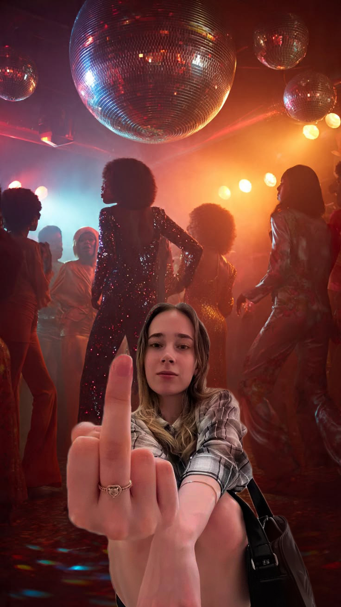
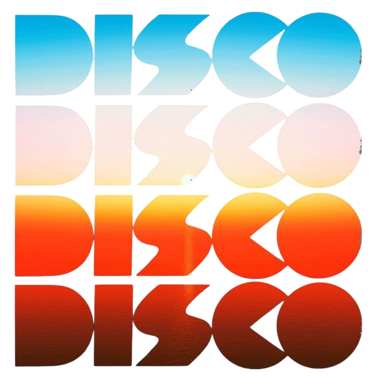
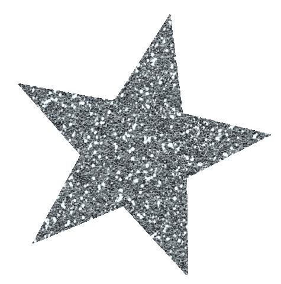
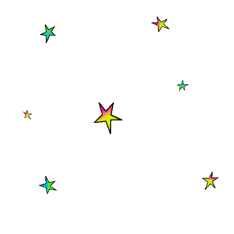
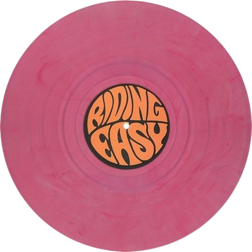
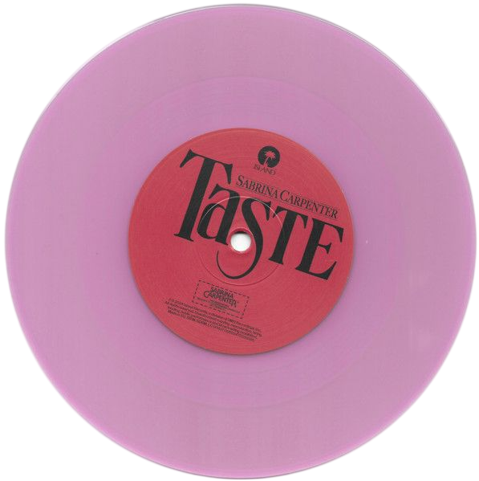
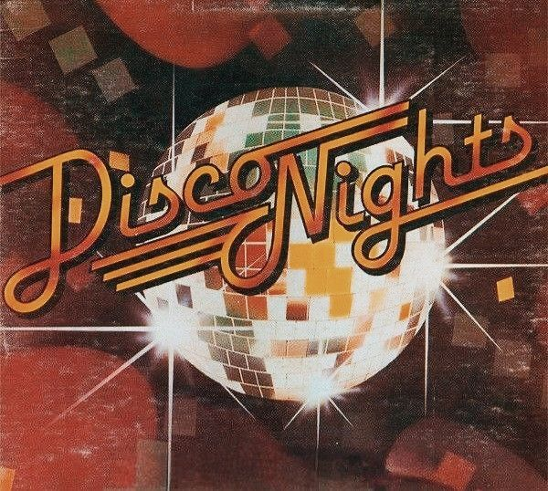
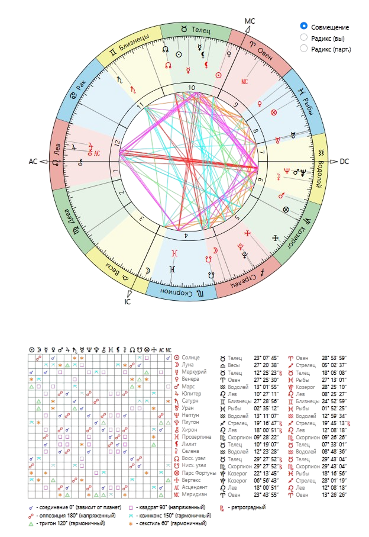
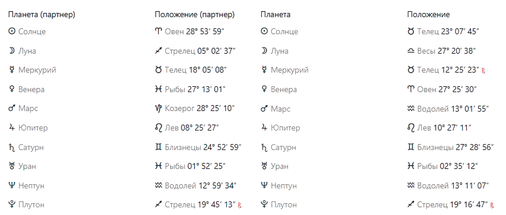

Это один из самых приятных аспектов для дружбы между двумя женщинами. Между вами довольно быстро возникает симпатия, ощущение комфорта и желание проводить время вместе. Вам легко понимать вкусы, эстетические предпочтения, отношение к людям и многие жизненные ценности друг друга. Даже если характеры различаются, обычно присутствует внутреннее ощущение: «с ней приятно». В такой связи редко приходится постоянно что-то доказывать или бороться за внимание.
В повседневной жизни аспект помогает сглаживать острые углы. Вы способны поддерживать друг друга эмоционально, вдохновлять на творчество, новые увлечения и приятные впечатления. Для дружбы это показатель теплоты, взаимной доброжелательности и искреннего желания видеть подругу счастливой. Часто именно такие аспекты становятся фундаментом длительных отношений, которые сохраняются даже после периодов редкого общения.
Этот аспект создает между вами активную и энергичную динамику. Подруга может вдохновлять вас на действия, помогать выходить из состояния сомнений и подталкивать к реализации идей. В свою очередь, вы поддерживаете её стремление добиваться целей и двигаться вперед. Вместе вы способны быстро организовывать поездки, проекты, мероприятия или просто активно проводить время.
Особенно хорошо этот аспект проявляется в дружбы, где есть совместные интересы и общие задачи. Вместо конкуренции здесь чаще возникает взаимная мотивация. Даже если одна из вас временно теряет уверенность или силы, другая способна вернуть настрой и энергию. Такие отношения редко бывают скучными, потому что постоянно стимулируют развитие и движение вперед.
Соединение Меркуриев считается одним из лучших показателей интеллектуальной совместимости. Вам легко понимать ход мыслей друг друга, обсуждать самые разные темы и быстро находить общий язык. Нередко возникает ощущение, будто подруга озвучивает то, о чем вы сами только что подумали. Поэтому общение может продолжаться часами без чувства усталости.
Этот аспект особенно ценен для дружбы, потому что позволяет решать любые вопросы через разговор. Даже при возникновении разногласий у вас остается способность обсуждать проблему и искать компромисс. Если между людьми есть хорошее соединение Меркуриев, они часто становятся не только друзьями, но и советчиками друг для друга, к мнению которых действительно прислушиваются.
Несмотря на наличие общего интереса к развитию, обучению и расширению кругозора, здесь появляются сложности во взглядах на жизнь. Одна из вас может смотреть на ситуацию слишком широко и оптимистично, а другая — считать такой подход поверхностным и непрактичным. Из-за этого даже обычные разговоры иногда превращаются в споры о том, «как правильно жить» или какие решения разумнее принимать.
Интересно, что конфликт возникает не из-за отсутствия общения, а наоборот — из-за большого количества обсуждений. Вам обеим есть что сказать, но взгляды на масштаб проблем и способы их решения могут сильно отличаться. Если научиться воспринимать различия как возможность увидеть ситуацию под другим углом, этот аспект способен обогащать обе стороны. Если же каждая будет настаивать исключительно на своей правоте, споры могут становиться регулярными.
Это один из самых неоднозначных аспектов в синастрии общения. С одной стороны, он дает интерес к психологии, творчеству, интуитивным темам и глубоким разговорам. С другой — создает огромное количество недопониманий. Вам может казаться, что подруга что-то недоговаривает, уходит от конкретики или меняет позицию в зависимости от настроения. Ей же может казаться, что вы слишком рациональны и не учитываете эмоциональную сторону происходящего.
На практике этот аспект часто проявляется через неверные интерпретации слов и поступков. Каждая может вкладывать в сказанное совсем другой смысл. Поэтому здесь особенно важно не строить догадки и не додумывать за другого человека. Чем больше открытости и прямоты в общении, тем легче нейтрализуются негативные проявления этого аспекта.
Этот аспект создает сильную эмоциональную динамику даже в дружеских отношениях. Между вами может присутствовать одновременно и притяжение, и раздражение. Вы способны восхищаться определенными качествами друг друга, но в то же время периодически сталкиваться из-за различий в темпераменте, привычках и способах выражения эмоций.
В дружбы такой аспект часто проявляется через вспышки обид, ревности к другим друзьям или споры на почве личных предпочтений. Например, одна хочет действовать быстро и решительно, а другая предпочитает комфорт, спокойствие и более мягкий подход. Тем не менее этот квадрат делает отношения живыми и эмоционально насыщенными. Полного равнодушия между вами практически не бывает: либо есть яркое взаимодействие, либо периодические столкновения характеров.
Этот аспект добавляет отношениям устойчивость и надежность. Если многие дружеские связи строятся исключительно на эмоциях и общих интересах, то здесь появляется еще и чувство ответственности друг за друга. Подруга может оказаться человеком, на которого действительно можно положиться в трудный момент, а вы, в свою очередь, способны давать ей ощущение принятия и поддержки. Такие отношения обычно выдерживают испытание временем гораздо лучше, чем поверхностные знакомства.
Особенно хорошо этот аспект проявляется в периоды жизненных трудностей. Когда у одной из вас возникают проблемы, другая не исчезает, а старается помочь делом, советом или просто своим присутствием. Благодаря этому дружба становится зрелой и прочной. Даже если эмоциональная близость развивается не сразу, со временем между вами формируется глубокое уважение и доверие.
Этот аспект делает дружбу интересной, живой и немного необычной. Между вами присутствует не только симпатия, но и постоянное ощущение новизны. Подруга может вдохновлять вас на нестандартные идеи, новые увлечения, знакомства или неожиданные жизненные решения. Вместе вам редко бывает скучно, потому что каждая приносит в отношения что-то новое.
При этом аспект не создает тяжелой зависимости друг от друга. Наоборот, он позволяет сохранять личную свободу и индивидуальность. Вы можете поддерживать близкие отношения, не пытаясь контролировать или ограничивать друг друга. Такая комбинация часто встречается между людьми, которые становятся не только подругами, но и единомышленницами, объединенными общими интересами и взглядами на развитие.
Этот аспект показывает различия в подходе к действиям и принятию решений. Одна из вас может зариться действовать быстро, полагаясь на энтузиазм и уверенность, а другая склонна смотреть на ситуацию шире и оценивать последствия. В результате периодически возникают споры о том, стоит ли рисковать, насколько реалистичны планы и как правильно распределять силы.
В позитивном варианте вы способны взаимно уравновешивать друг друга. Подруга помогает вам видеть более широкую перспективу, а вы помогает ей переходить от размышлений к конкретным действиям. Однако если каждая будет считать свою позицию единственно правильной, возможны конфликты из-за поспешных решений, завышенных ожиданий или несогласованности действий.
Это один из самых загадочных аспектов вашей совместимости. Он создает сильную эмоциональную и интуитивную связь, благодаря которой вы можете чувствовать настроение друг друга практически без слов. Между вами часто возникает интерес к психологии, духовным темам, творчеству или всему, что связано с внутренним миром человека.
Однако у аспекта есть и сложная сторона. Иногда вам бывает трудно понять реальные мотивы друг друга. Возникают недосказанности, ошибочные предположения или ситуации, когда одна из вас ожидает чего-то, не проговорив это вслух. Тогда появляются обиды буквально «на пустом месте». Чем больше честности и открытого диалога в отношениях, тем легче использовать сильные стороны этого аспекта и избегать ненужных недоразумений.
Очень сильный показатель сходства мировоззрения. У вас похожие взгляды на развитие, образование, путешествия, духовные ценности и общие жизненные перспективы. Часто при таком аспекте люди легко понимать, что для них важно в будущем, какие цели заслуживают внимания и ради чего стоит прикладывать усилия.
В дружбе это проявляется через взаимное вдохновение. Вы способны поддерживать друг друга в обучении, саморазвитии, изучении новых тем и расширении кругозора. Вместе вам интересно обсуждать большие жизненные вопросы, строить планы и мечтать о будущем. Главное — не уходить исключительно в мечты и сохранять связь с реальностью, потому что избыток оптимизма здесь тоже возможен.
Этот аспект является одним из наиболее противоречивых в вашей карте совместимости. Он показывает склонность к идеализации друг друга и отношений в целом. Иногда вы можете видеть не реального человека, а собственные ожидания, мечты или представления о том, каким он должен быть. Из-за этого периодически возникают разочарования, когда реальность не совпадает с фантазиями.
Кроме того, аспект может создавать путаницу в вопросах убеждений, мировоззрения и жизненных принципов. Вам интересно обсуждать философские, духовные и психологические темы, но именно в них чаще всего появляются расхождения. Для гармоничных отношений важно проверять свои ожидания фактами и не строить далеко идущие выводы исключительно на эмоциях или интуиции. Именно тогда этот аспект сможет стать источником вдохновения, а не причиной разочарований.
Этот аспект обычно встречается у людей одного поколения и показывает схожее отношение к серьезным жизненным вопросам. У вас могут быть похожие представления о стабильности, ответственности, карьере, обязательствах и жизненных целях. Благодаря этому вам легче понимать причины поступков друг друга и уважать те ограничения, которые каждая из вас считает важными.
В дружбе такой аспект создает ощущение надежности. Вы способны обсуждать серьезные темы без лишней драматизации, поддерживать друг друга в сложные периоды и вместе искать практические решения проблем. Иногда отношения могут казаться немного слишком рациональными или сдержанными, но именно эта зрелость часто становится причиной их долговечности. Даже после длительных пауз общение обычно сохраняет прочную основу.
Очень интересное сочетание стабильности и новаторства. Вы помогаете друг другу находить баланс между традиционным подходом и желанием что-то менять. Одна из вас может чаще предлагать новые идеи, а другая — помогать превращать их в реальные и работающие проекты. Благодаря этому ваши совместные решения нередко оказываются одновременно смелыми и хорошо продуманными.
В дружбе этот аспект дает взаимное уважение к индивидуальности друг друга. Несмотря на возможные различия в характере, вы способны видеть ценность чужой точки зрения. Особенно благоприятен аспект для совместного обучения, профессионального развития, творческих проектов и любых занятий, где требуется сочетание креативности и дисциплины. Это один из факторов, который помогает отношениям развиваться, а не стоять на месте.
Это поколенческий аспект, который показывает, что вы выросли примерно в одинаковой социальной и культурной среде. Вам знакомы одни и те же тенденции, изменения в обществе, технологии, музыкальные и культурные влияния. Поэтому многие вещи вы понимаете без дополнительных объяснений.
На более личном уровне аспект помогает чувствовать себя частью одной команды. У вас могут быть схожие взгляды на свободу, независимость и право каждого человека жить по своим правилам. Благодаря этому дружба часто строится без чрезмерного контроля и давления. Вы возрастаете, уважая индивидуальность друг друга и спокойно относитесь к особенностям характера, которые другие люди могли бы не понять.
Этот аспект также относится к поколениям и показывает сходство в мечтах, идеалах и интуитивном восприятии мира. Вам могут быть близки одни и те же духовные темы, творческие интересы, взгляды на психоделию или внутреннее развитие человека. Иногда возникает ощущение, будто вы смотрите на некоторые вещи через одинаковую призму.
Для дружбы это создает особую эмоциональную атмосферу понимания. Вам легче обсуждать личные переживания, мечты и вопросы, которые сложно объяснить логически. Однако сам по себе этот аспект редко является главным фактором близости. Скорее он создает фоновое чувство созвучия, которое становится заметным только в сочетании с более личными аспектами между планетами.
Еще один поколенческий аспект, который говорит о схожем жизненном опыте и одинаковом отношении к глубоким процессам перемен. Вы можете одинаково воспринимать темы власти, кризисов, трансформации личности и важных жизненных поворотов. Во многом ваши внутренние реакции на серьезные события оказываются похожими.
Для дружбы этот аспект создает ощущение, что вы понимаете друг друга на глубинном уровне, особенно когда речь идет о сложных жизненных этапах. Вместе вам легче обсуждать темы, которые другие люди предпочитают избегать. Однако основное значение аспекта заключается не в эмоциональной близости, а в сходстве мировоззрения поколения. Он усиливает чувство общности, но не определяет отношения самостоятельно.
У этой дружбы довольно интересный контраст. С одной стороны, здесь много сильных гармоничных аспектов: Солнце–Венера, Солнце–Марс, соединение Меркуриев, Венера–Сатурн, Венера–Уран, соединение Юпитеров, тригон Сатурн–Уран. Они дают взаимную симпатию, интеллектуальную близость, поддержку, общие интересы и способность вдохновлять друг друга на развитие.
С другой стороны, напряженные аспекты Меркурия к Юпитеру и Непнуну, Венеры к Марсу, Марса к Юпитеру и Юпитера к Непнуну показывают, что периодически между вами могут возникать недопонимания, разные ожидания и споры из-за взглядов на жизнь. Основная зона риска — не отсутствие чувств или дружеской привязанности, а склонность по-разному воспринимать одну и ту же ситуацию.
В целом карта выглядит как совместимость выше средней для дружбы. Здесь есть хороший фундамент для долгих отношений, много взаимного интереса и эмоционального тепла. Но гармония будет сохраняться при условии, что вы не станете идеализировать друг друга и научитесь спокойно относиться к различиям во взглядах. Тогда сильные стороны этой связи будут заметно перевешивать ее слабые места.